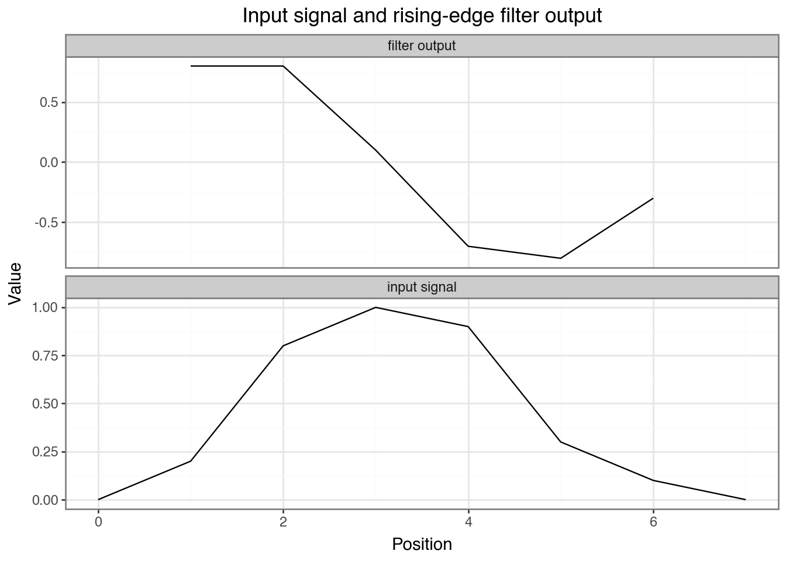
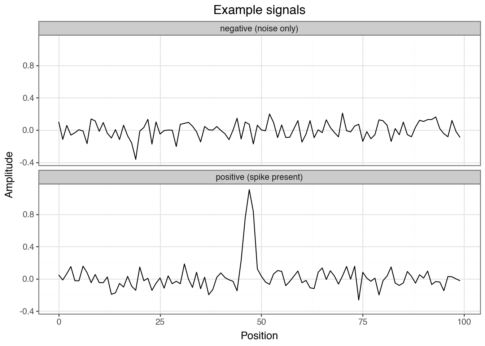
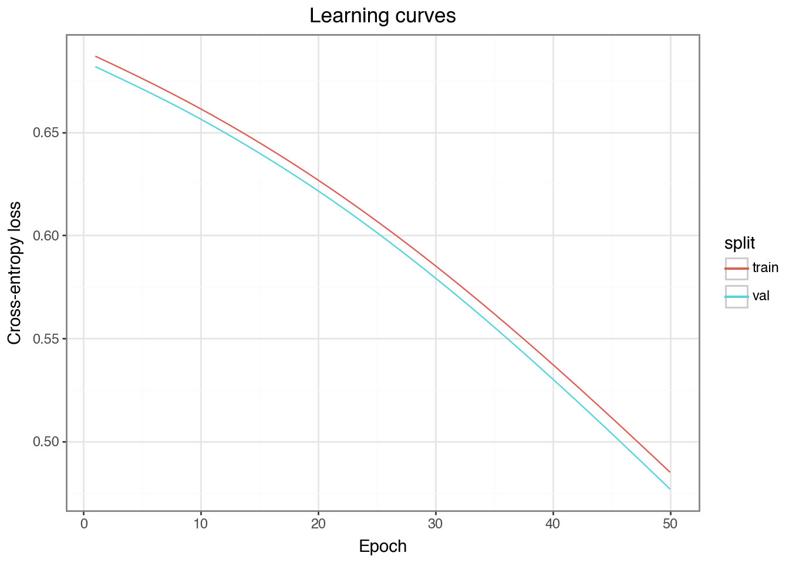
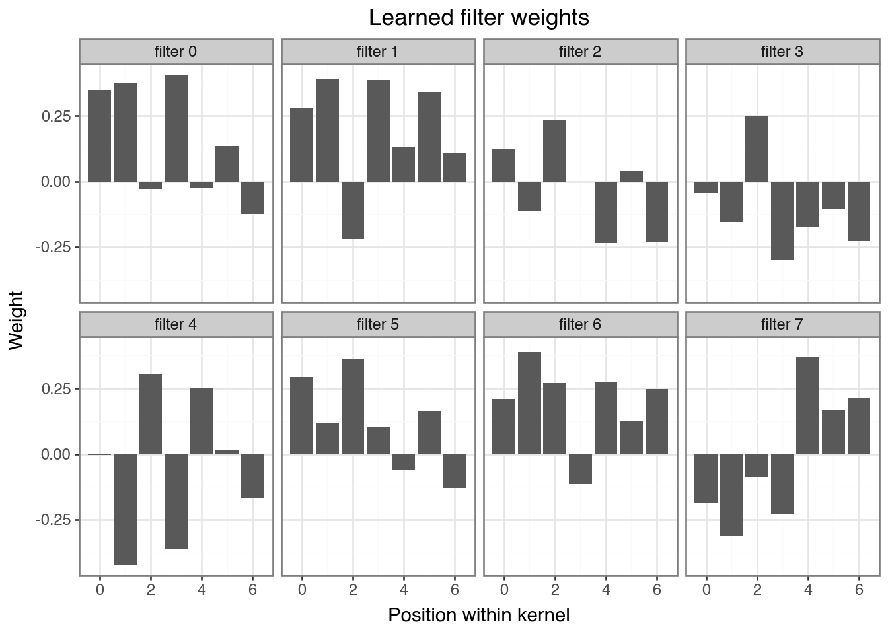

if False:
%pip install torch plotnine numpy scikit-learn02 · What Are Convolutional Neural Networks?
gene46100
notebook
Note: If the notebook doesn’t render correctly, click Open with → Google Colaboratory in the top-right of the Google Drive preview.
Learning Objectives
- Understand what a 1D convolution does: filter, stride, output shape
- See how shared weights create translation invariance
- Build a CNN in PyTorch with
Conv1d, ReLU, and pooling - Train a CNN to detect a pattern in a synthetic signal
- Visualize what a learned filter responds to
This notebook uses a pure numerical signal — no DNA yet. The same mechanics apply exactly when we switch to DNA sequences in notebook-03.
Install and load packages
import numpy as np
import torch
from torch import nn
import torch.nn.functional as F
from plotnine import ggplot, aes, geom_line, geom_tile, facet_wrap, labs, theme_bw, geom_col
import pandas as pd
# use GPU if available (cuda = NVIDIA, mps = Apple Silicon), otherwise CPU
if torch.cuda.is_available():
device = torch.device('cuda')
elif hasattr(torch.backends, 'mps') and torch.backends.mps.is_available():
device = torch.device('mps')
else:
device = torch.device('cpu')
print(f"Using device: {device}")Using device: mpsPart 1: What Does Convolution Do?
DNA connection: a CNN filter sliding over a signal is exactly the same operation as scanning a sequence for a transcription factor binding motif. The filter learns the motif shape from data.
The core idea
In a fully connected layer, every input connects to every output — N \times M weights.
In a convolutional layer, a small filter (also called a kernel) slides across the input, producing one output value per position using the same weights at every position.
Input: [x1 x2 x3 x4 x5 x6 x7 x8]
Filter: [w1 w2 w3] (kernel_size = 3)
Step 1: out[0] = x1*w1 + x2*w2 + x3*w3
Step 2: out[1] = x2*w1 + x3*w2 + x4*w3
Step 3: out[2] = x3*w1 + x4*w2 + x5*w3
...The filter slides across the input. At each position it computes a weighted sum. The same weights [w_1, w_2, w_3] are used everywhere — this is weight sharing.
Output length formula
For an input of length L, kernel size k, stride s=1, no padding:
\text{output length} = L - k + 1
For L=8, k=3: output length = 8 - 3 + 1 = 6.
Convolution by hand
Let’s implement this manually to see exactly what Conv1d does internally.
# A tiny input signal and a filter
signal = np.array([0.0, 0.2, 0.8, 1.0, 0.9, 0.3, 0.1, 0.0])
filt = np.array([-1.0, 0.0, 1.0]) # detects a rising edge: computes signal[i+2] - signal[i]
# Manually slide the filter across the signal
output = []
for i in range(len(signal) - len(filt) + 1):
val = np.dot(signal[i : i + len(filt)], filt)
output.append(val)
print("Input length :", len(signal))
print("Filter length:", len(filt))
print("Output length:", len(output)) # 8 - 3 + 1 = 6
print("Output values:", np.round(output, 2))Input length : 8
Filter length: 3
Output length: 6
Output values: [ 0.8 0.8 0.1 -0.7 -0.8 -0.3]Discuss: The output is large and positive where the signal rises —
[-1, 0, 1]computessignal[i+2] - signal[i]. Changing the filter weights detects different patterns.
Plotting input and filter output side by side shows where the rising-edge filter fires.
# Plot input and filter output together
offset = (len(filt) - 1) / 2 # center the shorter output on the input axis
plot_df = pd.DataFrame({
'position': list(range(len(signal))) + [i + offset for i in range(len(output))],
'value': list(signal) + output,
'series': ['input signal'] * len(signal) + ['filter output'] * len(output)
})
(ggplot(plot_df, aes(x='position', y='value'))
+ geom_line()
+ facet_wrap('~series', ncol=1, scales='free_y')
+ theme_bw()
+ labs(title="Input signal and rising-edge filter output", x="Position", y="Value"))
Exercise
Change filt to [1.0, 1.0, 1.0] (a smoothing/averaging filter). What does the output represent now?
Multiple filters
A conv layer typically has many filters, each learning to detect a different feature. The output has one channel per filter.
Input: shape (batch, 1, seq_len)
Conv1d: n_filters kernels → shape (batch, n_filters, out_len)This gives us a feature map: at each position, how strongly did each feature appear?
Part 2: Conv1d in PyTorch
Note on shapes:
Conv1dexpects input as(batch, channels, length). The channel dimension comes second — a common source of confusion. For a single numeric signal,channels=1. For one-hot DNA,channels=4.
Shapes and parameters
# in_channels=1 (one signal), out_channels=4 (four filters), kernel_size=5
conv = nn.Conv1d(in_channels=1, out_channels=4, kernel_size=5)
# Each filter has (in_channels * kernel_size) weights + 1 bias → times out_channels
n_params = sum(p.numel() for p in conv.parameters())
print(f"Parameters: {n_params}") # (1 * 5 + 1) * 4 = 24
x = torch.randn(1, 1, 50) # batch=1, channels=1, length=50
out = conv(x)
print(f"Input shape: {x.shape}")
print(f"Output shape: {out.shape}") # (1, 4, 46) = 50 - 5 + 1 = 46Parameters: 24
Input shape: torch.Size([1, 1, 50])
Output shape: torch.Size([1, 4, 46])Discuss: 4 filters of size 5 on a length-50 input gives output shape
(1, 4, 46)with only 24 parameters total — far fewer than a fully connected layer would need.
Exercise
Change kernel_size to 10 and out_channels to 8. Before running: (1) predict the output shape, (2) predict the number of parameters. Then verify.
Adding ReLU and pooling
Stacking ReLU and max pooling after conv shows how each step changes the tensor shape.
x = torch.randn(1, 1, 50)
conv = nn.Conv1d(in_channels=1, out_channels=4, kernel_size=5)
pool = nn.MaxPool1d(kernel_size=2)
after_conv = F.relu(conv(x))
after_pool = pool(after_conv)
print(f"After conv+relu: {after_conv.shape}") # (1, 4, 46)
print(f"After maxpool: {after_pool.shape}") # (1, 4, 23)After conv+relu: torch.Size([1, 4, 46])
After maxpool: torch.Size([1, 4, 23])Discuss:
MaxPool1d(kernel_size=2)takes the max of every 2 values, halving the length. This reduces dimensionality and makes detection robust to small shifts — if the pattern moves by 1 position, the max value is unchanged.
Part 3: The Task — Detect a Pattern Anywhere in a Signal
Now that we know what a conv layer does mechanically, here’s why it’s the right tool: a filter that has learned to recognize a pattern will fire wherever that pattern appears — at position 5 or position 80, the same weights do the work. An MLP has no such guarantee; it would need to learn a separate detector for every possible position.
We’ll create a dataset where some signals contain a specific “spike” embedded at a random position. The CNN must detect it regardless of where it appears — this is translation invariance in action.
DNA connection: a transcription factor binding motif can appear anywhere in a 300 bp sequence. The CNN doesn’t need to know where — it scans.
Generate the data
We generate 2000 sequences of length 100: half contain the spike pattern embedded at a random position, half are pure noise.
np.random.seed(42)
torch.manual_seed(42)
SEQ_LEN = 100
SPIKE = np.array([0.0, 0.3, 0.8, 1.0, 0.8, 0.3, 0.0]) # pattern to detect
N_SAMPLES = 2000
def make_dataset(n_samples, seq_len, spike, noise_std=0.1):
X = np.random.normal(0, noise_std, size=(n_samples, seq_len)).astype(np.float32) # float32 = PyTorch default
y = np.zeros(n_samples, dtype=np.int64)
for i in range(n_samples // 2): # first half → positive class
pos = np.random.randint(0, seq_len - len(spike)) # pick a random position
X[i, pos : pos + len(spike)] += spike # inject the spike at that position
y[i] = 1
return X, y
X, y = make_dataset(N_SAMPLES, SEQ_LEN, SPIKE)
print(f"X shape: {X.shape}, class balance: {y.mean():.2f}")X shape: (2000, 100), class balance: 0.50Visualize a few examples
examples = pd.DataFrame({
'position': list(range(SEQ_LEN)) * 2,
'amplitude': list(X[0]) + list(X[N_SAMPLES // 2]),
'label': ['positive (spike present)'] * SEQ_LEN + ['negative (noise only)'] * SEQ_LEN
})
(ggplot(examples, aes(x='position', y='amplitude'))
+ geom_line()
+ facet_wrap('~label', ncol=1)
+ theme_bw()
+ labs(title="Example signals", x="Position", y="Amplitude"))
Discuss: Can you spot the spike in the positive example? How hard would it be to find it visually across thousands of sequences?
Train / val / test split
We need to know whether our model has truly learned biological patterns or just memorized the training data. Splitting the data lets us monitor learning during training and reserve a completely untouched set for a final, honest evaluation.
Think of it like studying for an exam:
| Split | % | Analogy | Purpose |
|---|---|---|---|
| Train | 72% | Homework problems | Model learns from this data |
| Validation | 8% | Practice tests | Monitor for overfitting; tune hyperparameters |
| Test | 20% | Final exam | One-shot, unbiased performance estimate |
Warning
Just like you shouldn’t see the final exam before test day, the test set is never touched until the very end.
We achieve this in two steps: first reserve 20% for test, then split the remainder 90/10 into train and val. The code below does exactly that and converts the arrays to PyTorch tensors.
from sklearn.model_selection import train_test_split
X_train, X_test, y_train, y_test = train_test_split(X, y, test_size=0.2, random_state=42)
X_train, X_val, y_train, y_val = train_test_split(X_train, y_train, test_size=0.1, random_state=42)
def to_tensor(arr_X, arr_y):
# Conv1d expects (batch, channels, length) — unsqueeze adds the channel dim
return (torch.tensor(arr_X).unsqueeze(1).to(device),
torch.tensor(arr_y).to(device))
X_train_t, y_train_t = to_tensor(X_train, y_train)
X_val_t, y_val_t = to_tensor(X_val, y_val)
X_test_t, y_test_t = to_tensor(X_test, y_test)
print(f"Train: {X_train_t.shape}, Val: {X_val_t.shape}, Test: {X_test_t.shape}")Train: torch.Size([1440, 1, 100]), Val: torch.Size([160, 1, 100]), Test: torch.Size([400, 1, 100])Part 4: Build and Train the CNN
Define the model
One conv layer (8 filters, width 7) → ReLU → max pool → linear classifier with 2 outputs (spike / no spike).
class SpikeCNN(nn.Module):
def __init__(self, n_filters=8, kernel_size=7):
super().__init__() # required boilerplate for every PyTorch model class
self.conv1 = nn.Conv1d(in_channels=1, out_channels=n_filters, kernel_size=kernel_size)
self.pool = nn.MaxPool1d(kernel_size=2)
# After conv (kernel=7): 100 - 7 + 1 = 94 → after pool: 94 // 2 = 47
conv_out_len = (SEQ_LEN - kernel_size + 1) // 2
self.fc = nn.Linear(n_filters * conv_out_len, 2)
def forward(self, x):
x = self.pool(F.relu(self.conv1(x)))
x = x.view(x.size(0), -1) # flatten before the linear layer
return self.fc(x)
model = SpikeCNN(n_filters=8, kernel_size=7).to(device)
print(f"Model parameters: {sum(p.numel() for p in model.parameters())}")
print(model)Model parameters: 818
SpikeCNN(
(conv1): Conv1d(1, 8, kernel_size=(7,), stride=(1,))
(pool): MaxPool1d(kernel_size=2, stride=2, padding=0, dilation=1, ceil_mode=False)
(fc): Linear(in_features=376, out_features=2, bias=True)
)Exercise: count the parameters manually
conv1:(1 × 7 + 1) × 8= ?fc: length after pool is(100 − 7 + 1) // 2 = 47, so(8 × 47 + 1) × 2= ?- Total?
Training loop
The optimizer (Adam) adjusts the model’s weights to minimize the loss function (CrossEntropyLoss, which measures how far the predicted class probabilities are from the true labels). Each pass through the data is one epoch. We log training loss and validation accuracy to watch for overfitting.
def train(model, X_tr, y_tr, X_val, y_val, n_epochs=30, lr=1e-3):
optimizer = torch.optim.Adam(model.parameters(), lr=lr)
loss_fn = nn.CrossEntropyLoss()
history = {'train_loss': [], 'val_loss': [], 'val_acc': []}
for epoch in range(n_epochs):
model.train() # enable training mode
optimizer.zero_grad() # clear old gradients
loss = loss_fn(model(X_tr), y_tr) # forward pass
loss.backward() # compute gradients
optimizer.step() # update weights
history['train_loss'].append(loss.item())
model.eval() # disable dropout, batch norm tracking, etc.
with torch.no_grad(): # skip gradient tracking
val_logits = model(X_val)
val_loss = loss_fn(val_logits, y_val).item()
val_acc = (val_logits.argmax(1) == y_val).float().mean().item()
history['val_loss'].append(val_loss)
history['val_acc'].append(val_acc)
if (epoch + 1) % 5 == 0:
print(f"Epoch {epoch+1:3d} | train_loss={loss.item():.4f} "
f"| val_loss={val_loss:.4f} | val_acc={val_acc:.3f}")
return history
history = train(model, X_train_t, y_train_t, X_val_t, y_val_t, n_epochs=50)Epoch 5 | train_loss=0.6761 | val_loss=0.6710 | val_acc=0.744
Epoch 10 | train_loss=0.6613 | val_loss=0.6564 | val_acc=0.869
Epoch 15 | train_loss=0.6449 | val_loss=0.6398 | val_acc=0.938
Epoch 20 | train_loss=0.6268 | val_loss=0.6216 | val_acc=0.938
Epoch 25 | train_loss=0.6069 | val_loss=0.6014 | val_acc=0.962
Epoch 30 | train_loss=0.5852 | val_loss=0.5793 | val_acc=0.975
Epoch 35 | train_loss=0.5620 | val_loss=0.5555 | val_acc=0.975
Epoch 40 | train_loss=0.5373 | val_loss=0.5303 | val_acc=0.981
Epoch 45 | train_loss=0.5116 | val_loss=0.5040 | val_acc=0.981
Epoch 50 | train_loss=0.4850 | val_loss=0.4769 | val_acc=0.981Plot the learning curves
Discuss: Do train and val loss track each other? If val loss starts rising while train loss keeps falling, that is the signature of overfitting.
epochs = list(range(1, len(history['train_loss']) + 1))
curve_df = pd.DataFrame({
'epoch': epochs * 2,
'loss': history['train_loss'] + history['val_loss'],
'split': ['train'] * len(epochs) + ['val'] * len(epochs)
})
(ggplot(curve_df, aes(x='epoch', y='loss', color='split'))
+ geom_line()
+ theme_bw()
+ labs(title="Learning curves", x="Epoch", y="Cross-entropy loss"))
Evaluate on the test set
Discuss: How does test accuracy compare to validation accuracy? A large gap suggests the model overfit even to the validation set.
model.eval()
with torch.no_grad():
test_acc = (model(X_test_t).argmax(1) == y_test_t).float().mean().item()
print(f"Test accuracy: {test_acc:.3f}")Test accuracy: 0.985Exercise
Try n_filters=2 and retrain. Does accuracy drop? Why? Then try n_filters=32 — does it improve?
Part 5: What Did the Filters Learn?
DNA connection: in notebook-03, these same filter weights become sequence motifs. We’ll convert them to position weight matrices and compare to known TF binding motifs.
A key advantage of CNNs is interpretability — each filter is a small weight vector we can visualize directly.
# detach() removes gradient tracking, .cpu() moves to CPU — both needed before converting to numpy
filters = model.conv1.weight.detach().cpu().numpy() # shape: (n_filters, 1, kernel_size)
n_filters, _, kernel_size = filters.shape
filter_df = pd.DataFrame({
'position': list(range(kernel_size)) * n_filters,
'weight': filters[:, 0, :].flatten().tolist(),
'filter': [f'filter {i}' for i in range(n_filters) for _ in range(kernel_size)]
})
(ggplot(filter_df, aes(x='position', y='weight'))
+ geom_col()
+ facet_wrap('~filter', ncol=4)
+ theme_bw()
+ labs(title="Learned filter weights", x="Position within kernel", y="Weight"))
Question
The spike pattern was [0, 0.3, 0.8, 1.0, 0.8, 0.3, 0]. Can you identify which filter(s) learned a shape similar to it? Which learned an inverted version, and why might that also be useful?
Summary
| Concept | What we did |
|---|---|
| 1D convolution | Slid a filter over a signal, computed a feature map |
| Output shape | L - k + 1 (no padding, stride 1) |
| Shared weights | Same filter at every position → position-independent detection |
| ReLU + MaxPool | Non-linearity + dimensionality reduction |
| Multiple filters | Each learns a different feature |
| Filter visualization | Inspect what pattern each filter responds to |
What’s next
In notebook-03 we apply these exact mechanics to real DNA sequences. Here is what changes:
| This notebook | Notebook-03 | |
|---|---|---|
| Input | 1-channel numeric signal | 4-channel one-hot DNA (A/C/G/T) |
| Task | Classification (spike yes/no) | Regression (predict a score) |
| Pattern | Fixed spike shape | Sequence motifs (e.g. TAT, GCG) |
| Batching | Full dataset in one pass | Mini-batches via DataLoader |
| Filters reveal | Spike-shaped weight vectors | Sequence logos |
Everything else — Conv1d, ReLU, pooling, the training loop, filter visualization — carries over directly.